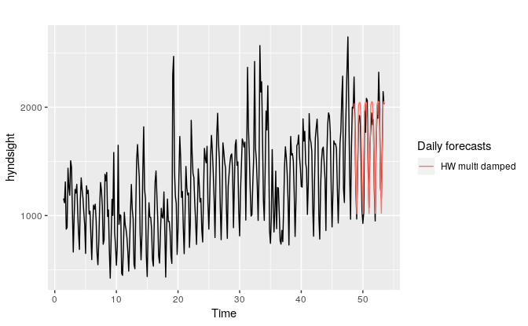

7.3 Holt-Winters’ seasonal method
Holt (1957) and Winters (1960) extended Holt’s method to capture seasonality. The Holt-Winters seasonal method comprises the forecast equation and three smoothing equations — one for the level \(\ell_t\), one for the trend \(b_t\), and one for the seasonal component \(s_t\), with corresponding smoothing parameters \(\alpha\), \(\beta^*\) and \(\gamma\). We use \(m\) to denote the frequency of the seasonality, i.e., the number of seasons in a year. For example, for quarterly data \(m=4\), and for monthly data \(m=12\).
There are two variations to this method that differ in the nature of the seasonal component. The additive method is preferred when the seasonal variations are roughly constant through the series, while the multiplicative method is preferred when the seasonal variations are changing proportional to the level of the series. With the additive method, the seasonal component is expressed in absolute terms in the scale of the observed series, and in the level equation the series is seasonally adjusted by subtracting the seasonal component. Within each year, the seasonal component will add up to approximately zero. With the multiplicative method, the seasonal component is expressed in relative terms (percentages), and the series is seasonally adjusted by dividing through by the seasonal component. Within each year, the seasonal component will sum up to approximately \(m\).
Holt-Winters’ additive method
The component form for the additive method is: \[\begin{align*} \hat{y}_{t+h|t} &= \ell_{t} + hb_{t} + s_{t-m+h_{m}^{+}} \\ \ell_{t} &= \alpha(y_{t} - s_{t-m}) + (1 - \alpha)(\ell_{t-1} + b_{t-1})\\ b_{t} &= \beta^*(\ell_{t} - \ell_{t-1}) + (1 - \beta^*)b_{t-1}\\ s_{t} &= \gamma (y_{t}-\ell_{t-1}-b_{t-1}) + (1-\gamma)s_{t-m}, \end{align*}\] where \(h_{m}^{+}=\lfloor(h-1)/m\rfloor+1\),13 which ensures that the estimates of the seasonal indices used for forecasting come from the final year of the sample. The level equation shows a weighted average between the seasonally adjusted observation \((y_{t} - s_{t-m})\) and the non-seasonal forecast \((\ell_{t-1}+b_{t-1})\) for time \(t\). The trend equation is identical to Holt’s linear method. The seasonal equation shows a weighted average between the current seasonal index, \((y_{t}-\ell_{t-1}-b_{t-1})\), and the seasonal index of the same season last year (i.e., \(m\) time periods ago).
The equation for the seasonal component is often expressed as \[ s_{t} = \gamma^* (y_{t}-\ell_{t})+ (1-\gamma^*)s_{t-m}. \] If we substitute \(\ell_t\) from the smoothing equation for the level of the component form above, we get \[ s_{t} = \gamma^*(1-\alpha) (y_{t}-\ell_{t-1}-b_{t-1})+ [1-\gamma^*(1-\alpha)]s_{t-m}, \] which is identical to the smoothing equation for the seasonal component we specify here, with \(\gamma=\gamma^*(1-\alpha)\). The usual parameter restriction is \(0\le\gamma^*\le1\), which translates to \(0\le\gamma\le 1-\alpha\).
Holt-Winters’ multiplicative method
The component form for the multiplicative method is: \[\begin{align*} \hat{y}_{t+h|t} &= (\ell_{t} + hb_{t})s_{t-m+h_{m}^{+}}. \\ \ell_{t} &= \alpha \frac{y_{t}}{s_{t-m}} + (1 - \alpha)(\ell_{t-1} + b_{t-1})\\ b_{t} &= \beta^*(\ell_{t}-\ell_{t-1}) + (1 - \beta^*)b_{t-1} \\ s_{t} &= \gamma \frac{y_{t}}{(\ell_{t-1} + b_{t-1})} + (1 - \gamma)s_{t-m} \end{align*}\]
Example: International tourist visitor nights in Australia
In this example we employ the Holt-Winters method with both additive and multiplicative seasonality to forecast quarterly visitor nights in Australia spent by international tourists. Figure 7.7 shows the data from 2005, and the forecasts for 2016–2017. The data show an obvious seasonal pattern, with peaks observed in the March quarter of each year, corresponding to the Australian summer.
aust <- window(austourists,start=2005)
fit1 <- hw(aust,seasonal="additive")
fit2 <- hw(aust,seasonal="multiplicative")
autoplot(aust) +
forecast::autolayer(fit1$mean, series="HW additive forecasts") +
forecast::autolayer(fit2$mean, series="HW multiplicative forecasts") +
xlab("Year") + ylab("International visitor night in Australia (millions)") +
guides(colour=guide_legend(title="Forecast"))Figure 7.7: Forecasting international visitor nights in Australia using the Holt-Winters method with both additive and multiplicative seasonality.
| \(t\) | \(y_t\) | \(\ell_t\) | \(b_t\) | \(s_t\) | \(\hat{y}_t\) | |
|---|---|---|---|---|---|---|
| 2004 Q1 | -3 | -1.69 | ||||
| 2004 Q2 | -2 | -9.31 | ||||
| 2004 Q3 | -1 | 9.70 | ||||
| 2004 Q4 | 0 | 32.26 | 0.70 | 1.31 | ||
| 2005 Q1 | 1 | 42.21 | 32.82 | 0.70 | 9.50 | 42.66 |
| 2005 Q2 | 2 | 24.65 | 33.66 | 0.70 | -9.13 | 24.21 |
| 2005 Q3 | 3 | 32.67 | 34.36 | 0.70 | -1.69 | 32.67 |
| 2005 Q4 | 4 | 37.26 | 35.33 | 0.70 | 1.69 | 36.37 |
| 2006 Q1 | 5 | 45.24 | 35.94 | 0.70 | 9.38 | 45.54 |
| 2006 Q2 | 6 | 29.35 | 37.21 | 0.70 | -8.35 | 27.52 |
| 2006 Q3 | 7 | 36.34 | 37.95 | 0.70 | -1.64 | 36.21 |
| 2006 Q4 | 8 | 41.78 | 39.09 | 0.70 | 2.30 | 40.34 |
| 2007 Q1 | 9 | 49.28 | 39.83 | 0.70 | 9.42 | 49.17 |
| 2007 Q2 | 10 | 31.28 | 40.25 | 0.70 | -8.73 | 32.18 |
| 2007 Q3 | 11 | 37.85 | 40.50 | 0.70 | -2.26 | 39.31 |
| 2007 Q4 | 12 | 38.84 | 39.77 | 0.70 | 0.31 | 43.51 |
| 2008 Q1 | 13 | 51.24 | 40.89 | 0.70 | 9.99 | 49.90 |
| 2008 Q2 | 14 | 31.84 | 41.28 | 0.70 | -9.17 | 32.85 |
| 2008 Q3 | 15 | 41.32 | 42.47 | 0.70 | -1.58 | 39.71 |
| 2008 Q4 | 16 | 42.80 | 42.96 | 0.70 | 0.02 | 43.48 |
| 2009 Q1 | 17 | 55.71 | 44.29 | 0.70 | 10.87 | 53.66 |
| 2009 Q2 | 18 | 33.41 | 44.25 | 0.70 | -10.20 | 35.83 |
| 2009 Q3 | 19 | 42.32 | 44.63 | 0.70 | -2.03 | 43.38 |
| 2009 Q4 | 20 | 45.16 | 45.27 | 0.70 | -0.06 | 45.35 |
| 2010 Q1 | 21 | 59.58 | 46.81 | 0.70 | 12.04 | 56.84 |
| 2010 Q2 | 22 | 34.84 | 46.75 | 0.70 | -11.25 | 37.31 |
| 2010 Q3 | 23 | 44.84 | 47.27 | 0.70 | -2.28 | 45.43 |
| 2010 Q4 | 24 | 46.97 | 47.69 | 0.70 | -0.46 | 47.91 |
| 2011 Q1 | 25 | 60.02 | 48.26 | 0.70 | 11.86 | 60.42 |
| 2011 Q2 | 26 | 38.37 | 49.17 | 0.70 | -10.97 | 37.71 |
| 2011 Q3 | 27 | 46.98 | 49.68 | 0.70 | -2.54 | 47.59 |
| 2011 Q4 | 28 | 50.73 | 50.63 | 0.70 | -0.11 | 49.92 |
| 2012 Q1 | 29 | 61.65 | 50.86 | 0.70 | 11.20 | 63.19 |
| 2012 Q2 | 30 | 39.30 | 51.16 | 0.70 | -11.52 | 40.59 |
| 2012 Q3 | 31 | 52.67 | 52.89 | 0.70 | -1.11 | 49.33 |
| 2012 Q4 | 32 | 54.33 | 53.85 | 0.70 | 0.25 | 53.48 |
| 2013 Q1 | 33 | 66.83 | 54.88 | 0.70 | 11.66 | 65.76 |
| 2013 Q2 | 34 | 40.87 | 54.61 | 0.70 | -12.88 | 44.06 |
| 2013 Q3 | 35 | 51.83 | 54.58 | 0.70 | -2.12 | 54.19 |
| 2013 Q4 | 36 | 57.49 | 55.88 | 0.70 | 1.09 | 55.53 |
| 2014 Q1 | 37 | 65.25 | 55.67 | 0.70 | 10.39 | 68.25 |
| 2014 Q2 | 38 | 43.06 | 56.24 | 0.70 | -13.06 | 43.49 |
| 2014 Q3 | 39 | 54.76 | 56.92 | 0.70 | -2.14 | 54.82 |
| 2014 Q4 | 40 | 59.83 | 57.97 | 0.70 | 1.57 | 58.71 |
| 2015 Q1 | 41 | 73.26 | 59.96 | 0.70 | 12.18 | 69.05 |
| 2015 Q2 | 42 | 47.70 | 60.69 | 0.70 | -13.02 | 47.59 |
| 2015 Q3 | 43 | 61.10 | 61.96 | 0.70 | -1.35 | 59.24 |
| 2015 Q4 | 44 | 66.06 | 63.22 | 0.70 | 2.35 | 64.22 |
| \(h\) | \(\hat{y}_{T+h|T}\) | |||||
| 2016 Q1 | 1 | 76.10 | ||||
| 2016 Q2 | 2 | 51.60 | ||||
| 2016 Q3 | 3 | 63.97 | ||||
| 2016 Q4 | 4 | 68.37 | ||||
| 2017 Q1 | 5 | 78.90 | ||||
| 2017 Q2 | 6 | 54.41 | ||||
| 2017 Q3 | 7 | 66.77 | ||||
| 2017 Q4 | 8 | 71.18 |
| \(t\) | \(y_t\) | \(\ell_t\) | \(b_t\) | \(s_t\) | \(\hat{y}_t\) | |
|---|---|---|---|---|---|---|
| 2004 Q1 | -3 | 0.96 | ||||
| 2004 Q2 | -2 | 0.77 | ||||
| 2004 Q3 | -1 | 1.24 | ||||
| 2004 Q4 | 0 | 32.49 | 0.70 | 1.02 | ||
| 2005 Q1 | 1 | 42.21 | 33.51 | 0.71 | 1.24 | 41.29 |
| 2005 Q2 | 2 | 24.65 | 33.24 | 0.68 | 0.77 | 26.36 |
| 2005 Q3 | 3 | 32.67 | 33.94 | 0.68 | 0.96 | 32.62 |
| 2005 Q4 | 4 | 37.26 | 35.40 | 0.70 | 1.02 | 35.44 |
| 2006 Q1 | 5 | 45.24 | 36.22 | 0.71 | 1.24 | 44.92 |
| 2006 Q2 | 6 | 29.35 | 37.44 | 0.72 | 0.77 | 28.44 |
| 2006 Q3 | 7 | 36.34 | 38.00 | 0.72 | 0.96 | 36.71 |
| 2006 Q4 | 8 | 41.78 | 39.64 | 0.74 | 1.02 | 39.64 |
| 2007 Q1 | 9 | 49.28 | 40.04 | 0.73 | 1.24 | 50.25 |
| 2007 Q2 | 10 | 31.28 | 40.70 | 0.73 | 0.77 | 31.41 |
| 2007 Q3 | 11 | 37.85 | 40.52 | 0.70 | 0.96 | 39.84 |
| 2007 Q4 | 12 | 38.84 | 39.77 | 0.66 | 1.02 | 42.21 |
| 2008 Q1 | 13 | 51.24 | 40.76 | 0.67 | 1.24 | 50.30 |
| 2008 Q2 | 14 | 31.84 | 41.39 | 0.67 | 0.77 | 31.91 |
| 2008 Q3 | 15 | 41.32 | 42.46 | 0.68 | 0.96 | 40.44 |
| 2008 Q4 | 16 | 42.80 | 42.55 | 0.66 | 1.02 | 44.16 |
| 2009 Q1 | 17 | 55.71 | 43.90 | 0.68 | 1.24 | 53.77 |
| 2009 Q2 | 18 | 33.41 | 44.05 | 0.67 | 0.77 | 34.34 |
| 2009 Q3 | 19 | 42.32 | 44.40 | 0.66 | 0.96 | 43.00 |
| 2009 Q4 | 20 | 45.16 | 44.64 | 0.65 | 1.02 | 46.13 |
| 2010 Q1 | 21 | 59.58 | 46.43 | 0.68 | 1.24 | 56.35 |
| 2010 Q2 | 22 | 34.84 | 46.28 | 0.65 | 0.77 | 36.29 |
| 2010 Q3 | 23 | 44.84 | 46.80 | 0.65 | 0.96 | 45.14 |
| 2010 Q4 | 24 | 46.97 | 46.76 | 0.63 | 1.02 | 48.57 |
| 2011 Q1 | 25 | 60.02 | 47.76 | 0.64 | 1.24 | 58.98 |
| 2011 Q2 | 26 | 38.37 | 49.03 | 0.66 | 0.77 | 37.28 |
| 2011 Q3 | 27 | 46.98 | 49.32 | 0.65 | 0.96 | 47.78 |
| 2011 Q4 | 28 | 50.73 | 49.79 | 0.64 | 1.02 | 51.14 |
| 2012 Q1 | 29 | 61.65 | 50.04 | 0.63 | 1.24 | 62.77 |
| 2012 Q2 | 30 | 39.30 | 50.82 | 0.64 | 0.77 | 39.03 |
| 2012 Q3 | 31 | 52.67 | 52.92 | 0.68 | 0.96 | 49.49 |
| 2012 Q4 | 32 | 54.33 | 53.37 | 0.67 | 1.02 | 54.86 |
| 2013 Q1 | 33 | 66.83 | 53.90 | 0.67 | 1.24 | 67.26 |
| 2013 Q2 | 34 | 40.87 | 53.90 | 0.65 | 0.77 | 42.03 |
| 2013 Q3 | 35 | 51.83 | 54.26 | 0.64 | 0.96 | 52.47 |
| 2013 Q4 | 36 | 57.49 | 55.46 | 0.66 | 1.02 | 56.19 |
| 2014 Q1 | 37 | 65.25 | 54.49 | 0.61 | 1.24 | 69.84 |
| 2014 Q2 | 38 | 43.06 | 55.46 | 0.62 | 0.77 | 42.44 |
| 2014 Q3 | 39 | 54.76 | 56.46 | 0.63 | 0.96 | 53.93 |
| 2014 Q4 | 40 | 59.83 | 57.69 | 0.65 | 1.02 | 58.43 |
| 2015 Q1 | 41 | 73.26 | 58.57 | 0.66 | 1.24 | 72.59 |
| 2015 Q2 | 42 | 47.70 | 60.42 | 0.69 | 0.77 | 45.62 |
| 2015 Q3 | 43 | 61.10 | 62.17 | 0.72 | 0.96 | 58.77 |
| 2015 Q4 | 44 | 66.06 | 63.62 | 0.75 | 1.02 | 64.38 |
| \(h\) | \(\hat{y}_{T+h|T}\) | |||||
| 2016 Q1 | 1 | 80.09 | ||||
| 2016 Q2 | 2 | 50.15 | ||||
| 2016 Q3 | 3 | 63.34 | ||||
| 2016 Q4 | 4 | 68.18 | ||||
| 2017 Q1 | 5 | 83.80 | ||||
| 2017 Q2 | 6 | 52.45 | ||||
| 2017 Q3 | 7 | 66.21 | ||||
| 2017 Q4 | 8 | 71.23 |
The applications of both methods (with additive and multiplicative seasonality) are presented in Tables 7.4 and 7.5 respectively. Because both methods have exactly the same number of parameters to estimate, we can compare the training RMSE from both models. In this case, the method with multiplicative seasonality fits the data best. This was to be expected, as the time plot shows that the seasonal variation in the data increases as the level of the series increases. This is also reflected in the two sets of forecasts; the forecasts generated by the method with the multiplicative seasonality display larger and increasing seasonal variation as the level of the forecasts increases compared to the forecasts generated by the method with additive seasonality.
The estimated states for both models are plotted in Figure 7.8. The small value of \(\gamma\) for the multiplicative model means that the seasonal component hardly changes over time. The small value of \(\beta^{*}\) for the additive model means the slope component hardly changes over time (check the vertical scale).
Figure 7.8: Estimated components for the Holt-Winters method with additive and multiplicative seasonal components.
Holt-Winters’ damped method
Damping is possible with both additive and multiplicative Holt-Winters’ methods. A method that often provides accurate and robust forecasts for seasonal data is the Holt-Winters method with a damped trend and multiplicative seasonality:
\[\begin{align*} \hat{y}_{t+h|t} &= \left[\ell_{t} + (\phi+\phi^2 + \dots + \phi^{h})b_{t}\right]s_{t-m+h_{m}^{+}}. \\ \ell_{t} &= \alpha(y_{t} / s_{t-m}) + (1 - \alpha)(\ell_{t-1} + \phi b_{t-1})\\ b_{t} &= \beta^*(\ell_{t} - \ell_{t-1}) + (1 - \beta^*)\phi b_{t-1} \\ s_{t} &= \gamma \frac{y_{t}}{(\ell_{t-1} + \phi b_{t-1})} + (1 - \gamma)s_{t-m}. \end{align*}\]
Example: Holt-Winters method with daily data
The Holt-Winters method can also be used for daily type of data, where the seasonal pattern is of length 7, and the appropriate unit of time for \(h\) is in days. Here, we generate daily forecasts for the last five weeks for the hyndsight data, which contains the daily pageviews on the Hyndsight blog for one year starting April 30, 2014.
fc <- hw(subset(hyndsight,end=length(hyndsight)-35),
damped = TRUE, seasonal="multiplicative", h=35)
autoplot(hyndsight) +
forecast::autolayer(fc$mean, series="HW multi damped")+
guides(colour=guide_legend(title="Daily forecasts"))
References
Holt, Charles E. 1957. “Forecasting Seasonals and Trends by Exponentially Weighted Averages.” O.N.R. Memorandum 52. Carnegie Institute of Technology, Pittsburgh USA.
Winters, P R. 1960. “Forecasting Sales by Exponentially Weighted Moving Averages.” Management Science 6: 324–42.
The notation \(\lfloor u \rfloor\) means the largest integer not greater than \(u\).↩